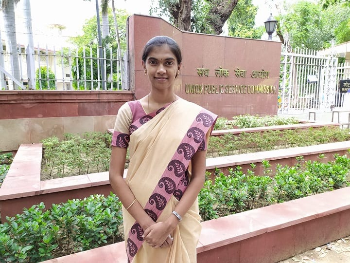
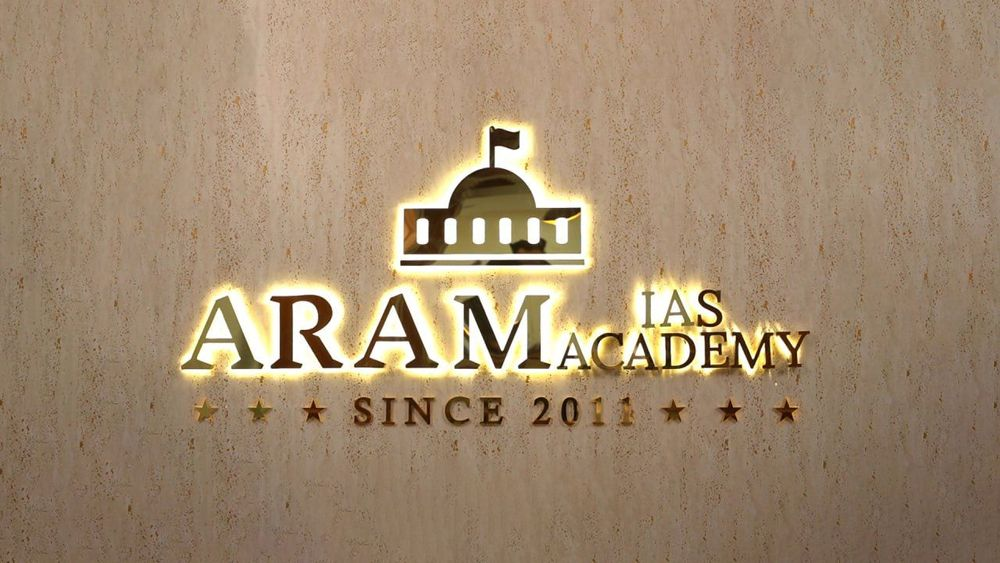

All India Rank 42
Ms. Swathi Sree T
Tamil Nadu Rank 1. Shares her experience with ARAM IAS Academy.
Results
Use real ARAM result posters, student photos, testimonial clips and recognition photos here. This page should feel like evidence, not a designed claim.


Tamil Nadu Rank 1. Shares her experience with ARAM IAS Academy.
All India Rank 47
Tamil Nadu Rank 02All India Rank 119
Tamil medium to IASStudent Stories

“The real shift was not only studying more. It was knowing what to fix, writing again, and seeing the difference in marks.”
Read testimonial →Awards
Use the actual recognition image from ARAM's official site or approved press/award photos. Keep text minimal beside the image.
Testimonials
Prefer screenshots/video stills from official topper talks over generic initials.
Hello everyone, this is Vibu Krishna. I got 473rd rank in CSE 2019, which was my second attempt. I did my coaching in ARAM IAS Academy, Chennai.
I am filled with gratitude towards ARAM, which helped me navigate the unsure and unpredictable waters of UPSC. They helped me develop answer-writing skills and the guessing acumen essential for mains and prelims respectively.
U. Vibu Krishna
AIR 473
Answer Transformations
Climate change is a big problem for India. It affects agriculture and health. The government should take steps.
Issues: No demand recognition, no examples, generic conclusion.
Score: 3.5 / 10
India's climate vulnerability is multidimensional: monsoon variability, Himalayan glacial retreat and coastal exposure. The question demands both adaptation and mitigation.
Improvements: Demand recognised, data cited, balanced argument.
Score: 7.5 / 10
Performance Evidence
All numbers are illustrative placeholders pending claims governance approval.